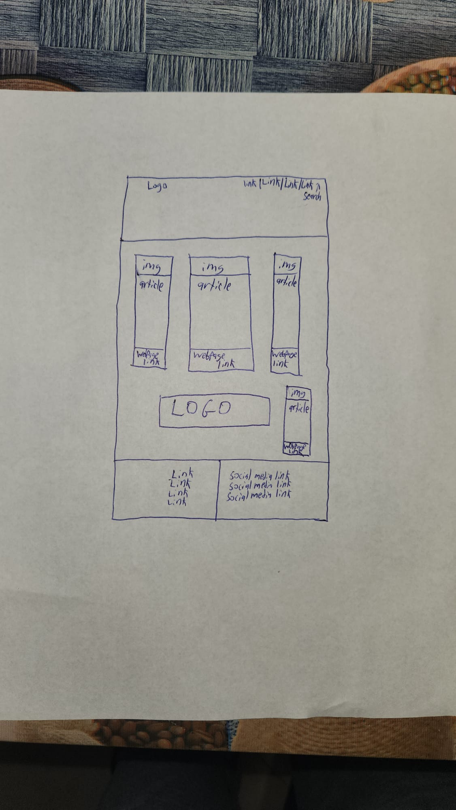
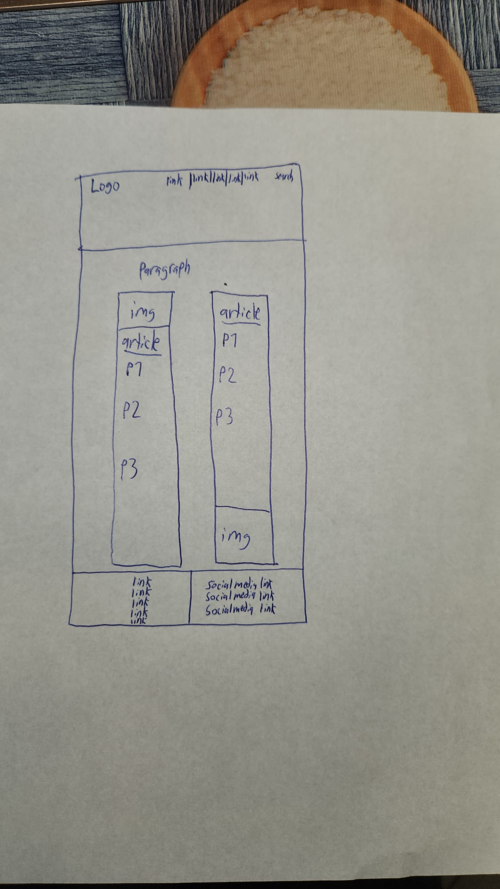

In the essential story of my website, I decided to write articles that go deeper into topics describing future technologies. Hence I gave the name of the website "Future Technologies". I have a homepage on my website, with four other pages describing different technologies, Virtual Reality, the Internet of Things, Cloud computing, and Artificial Intelligence. These technologies will have a significant global impact for many years to come.
On my website, the main focus of the content helps readers understand what kind of technologies will have a big influence on people. The website's PoV (Point of View) is in the third person. I chose to write articles that give information to readers who might not be familiar with the different technologies I describe on my website.
The pictures below are the wireframes I designed for the first version of the website I developed. The project result is slightly different; I modified the website so that I could style it with more complexity.
 The first image has a homepage design with a logo and navigational links in the header. Below is the main content for the webpage. There are several articles with pictures and another set of links to access different web pages which aren't located at the header. The logo is also found in the main content. Below the main content is the footer containing links to the different web pages and social media links.
In the second image, the header and footer are the same as the homepage. The different part is the web page's main content which goes more in-depth on the topic of technology. Each technology webpage will have two articles with an image and three paragraphs for every single article.
One thing that inspired me to create my website is that I worked hard the past year to get a high-tech job. High-tech is a tremendous topic in Israel. Over 10% of all Israelis work in high-tech. At the beginning of the project, I thought if I were to do more research on the topics of different technologies, I would be able to get a good job.
The second thing that inspired me was adding projects to my resume. Projects that take more effort to achieve will work in my favor, especially in job interviews. I have done different interviews for different companies, and just about every time, the employer was curious about the coding projects I worked on during my free time.
The third thing that inspired me to create the website was learning responsive design. I took some mobile development courses and learned more about the React framework and responsive website design. During this project, I didn't use frameworks like React, so in the mobile development course I studied, I learned a great deal about different device sizes, which impact how the user views content on the website. Even when viewing a website from the desktop, if you shrink the web browser's window content, the content should change its appearance.
One way my website is accessible is by using the tab key to find the locations of the different links on the webpage. Another method that makes my website accessible is that if images fail to upload to the client device, there will be alternative text which describes the image. Another way is the overall structure and design of the website. The links to the different web pages can be found both at the header and the footer of all five web pages.
One of the ways I considered the website's usability was by using images related to each topic on the website. For instance, if the topic was regarding Virtual Reality, I used a photo of Virtual Reality technology which compliments the topic when reading an article. I also considered the background color of the website. I chose white since it is very easy to see when black text is written over white space. When scrolling down on the different web pages, you can see that the navigational links follow to the bottom of the webpage. Even though navigational links can be found at the webpage's footer, I considered a scenario in which the reader finds himself at the main content and can't see any links on their screen.
One of the things which I learned during the project was researching different IoT applications. I learned what a smart city is and the various advantages it may provide for society. Another thing I learned was the use of cloud computing for quantum computers. I was stunned when I read about the topic. The idea of having quantum internet gets me excited to see what the future of technology will look like. The third thing I learned was that Pokemon Go's popularity made the whole world familiarized with Augmented Reality even though the technology was invented decades before.
It was helpful to have the same layout for four different web pages. The only difference between the web pages (other than the home page) is the topic of the articles. For each technology topic, I described the two different applications and uses of the technology.
One of the most important aspects of a website is having great interactivity. Next time I create a website, I will invest more time thinking of different ways a user can interact with my website.
I must say that, I had to research information regarding different technologies. The links below are articles in which other authors wrote information regarding various applications in technology. I used some of the ideas from multiple authors in my project.
The wireframes for the website can be found at the top of the webpage.